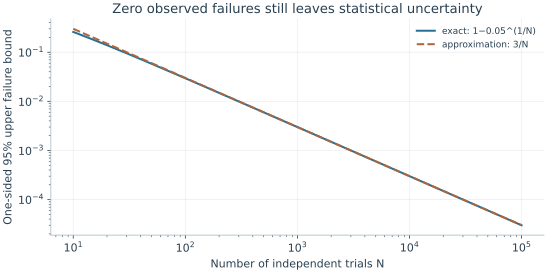
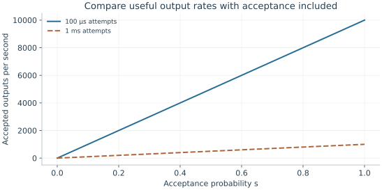

Starting point: Chapters 1–18; physical concepts and approximations are introduced as needed.
Anchor example: A fixed workload with a target success probability and runtime.
This lesson includes explanations, worked examples, and problems with solutions. Advanced results whose proofs are outside the chapter are identified explicitly.
We can now follow a computation from its circuit down to pulses, couplings, detectors, refrigerators, and decoders, and count the cost of each step. Yet devices are often compared by a single number, such as a qubit count, a lifetime, or a gate fidelity. A processor with more qubits is not necessarily the one that completes a given computation more accurately or sooner. How should two processors be compared?
We first ask what a physical metric actually measures, and why metrics from different experiments are not interchangeable. Logical metrics answer different questions again, tied to an encoded task. Fixing a task then lets us count its full execution cost, and finite samples give every estimate an uncertainty, even when no failures are seen. Finally, comparing two implementations of the same task on matched assumptions shows which bottleneck matters, and a complete study traces one task through the whole course.
Our first question is what a physical metric measures.
19.1 Performance Measures
Every reported figure comes from a particular experiment and model. What does each kind of figure tell us, and what does it leave out? Physical metrics describe processes such as relaxation or readout under the conditions of their own experiment. Logical metrics describe an encoded task, and they must be translated into the length of the computation that needs them.
19.1.1 Physical metrics
What does a physical metric measure? Exactly what its experiment measured, through its model. A \(T_1\) experiment tracks excited population. A Ramsey experiment tracks coherence during one particular sequence. A readout calibration estimates assignment probabilities. These are different quantities, not interchangeable error rates.
How do we use one? For an excited state idling for 1 μs with \(T_1=100\) μs, the exponential-relaxation model gives a decay probability \(1-e^{-0.01}\simeq0.00995\). A superposition, a driven state, or a qubit exposed to crosstalk needs a different calculation. So the metrics we need are set by the model we use. If the model assumes two levels, we need the leakage; if the schedule runs gates in parallel, we need simultaneous-gate behaviour. More decimal places in a fitted lifetime do not supply either.
19.1.2 Logical metrics
What does a logical error rate measure? It is defined for an encoded task and a recovery procedure. A logical memory error per round answers a storage question. A logical entangling gate adds operations, and universal computation can add auxiliary-state production and adaptive measurements.
How long a computation does a logical error rate allow? If independent cycles fail with probability \(p_L\), the computation survives \(K\) cycles with probability \((1-p_L)^K\), so the total failure is about \(Kp_L\) when that is small. Comparing code distances requires matched preparation, extraction, decoder, and physical conditions. A memory whose logical error falls as the distance grows is stronger evidence than one good distance. It still does not certify every logical gate at the same error rate.
Problem 19.1. Why is a long T1 insufficient to predict circuit accuracy?
Worked solution
Dephasing, control error, leakage, readout, and interactions can dominate even when relaxation is weak. The circuit schedule determines how much each mechanism matters.
19.2 Workload Evaluation
Metrics become comparable only once a task is fixed. What does it cost to produce a task's output, and how certain is the result? Compiling the full sequence and counting accepted outputs per unit time gives the execution cost. The statistics of independent trials then give the uncertainty of every estimate, including one with no observed failures.
19.2.1 Compilation and execution cost
What should we compare? An output, chosen before looking at the devices: for example, a Bell-pair correlation estimate with a stated uncertainty. We compile the full sequence for each device, including routing, initialization, acquisition, reset, and rejected attempts. The useful output rate is the number of accepted results divided by the elapsed time.
How does acceptance change the rate? If an attempt takes \(\tau\), is accepted with probability \(s\), and is retried independently, the accepted rate is \(s/\tau\), not \(1/\tau\). Calibration and other overhead lower it further. For accuracy, an illustrative model with \(G\) equal, independent failure opportunities gives a no-fault probability \((1-p)^G\). It can guide a resource estimate. Coherent errors that cancel, errors that are corrected, and correlated errors all break its reading as the probability of success, so the model must match the actual noise and output.
19.2.2 Statistical uncertainty
How precise is an estimated success probability? Let independent trials return success bits \(X_i\), each with mean \(p\) and variance \(p(1-p)\). The average \(\hat p=N^{-1}\sum_iX_i\) then has variance \(p(1-p)/N\). Replacing the unknown \(p\) by its estimate gives the standard error \(\sqrt{\hat p(1-\hat p)/N}\), valid away from \(\hat p=0\) or \(1\). At 9000 successes in 10,000 shots, this is 0.003, or 0.3 percentage points.
What if no failures are seen? The standard error then reads zero, which is wrong, so we need another calculation. With failure probability \(q\), the chance of seeing no failures in \(N\) trials is \((1-q)^N\). The values of \(q\) for which this chance is at least 0.05 remain plausible. Setting \((1-q)^N=0.05\) gives the one-sided 95% upper bound \(q=1-0.05^{1/N}\), about \(3/N\) because \(\ln20\approx3\). With \(N=1000\) the bound is about 0.00299. Both statements assume independent trials, and neither accounts for drift or systematic bias.

The bound follows by solving (1−q)^N = 0.05 for q when no failures are seen. Independent identical trials are assumed; drift and systematic bias are not included.
Problem 19.2. In 10,000 independent trials, 9,000 succeed. Estimate one standard error.
Worked solution
The estimate is √(0.9 × 0.1/10,000) = 0.003, or 0.3 percentage points. It quantifies sampling variation under the model, not calibration bias or drift.
19.3 Comparative Assessment
With costs and uncertainties in hand, we can compare implementations of one task. How do we compare fairly, and how do we find which change would help most? Placing complete implementations side by side under the same assumptions separates rate from quality. Changing one bottleneck at a time in a full study then shows which improvement matters.
19.3.1 Matched resource models
How do we compare two devices fairly? Build a table whose columns are complete implementations of the same task and whose rows are their physical assumptions: native operations, routing cost, parallelism, measurement time, accepted fraction, calibration duty cycle, and uncertainty. Measured parameters and assumed ones are labelled separately.
Which is better, then? Suppose A accepts 90% of attempts every 100 μs, and B accepts 99% every 1 ms. Their accepted rates are 9000 s⁻¹ and 990 s⁻¹. B may produce a more accurate conditional state, but accuracy and rate are different axes. So we fix the allowed output error first and then ask whether either device meets it. If neither does, the comparison must include error correction or additional resources, not a ranking of isolated numbers.
19.3.2 A complete implementation study
What does a full study involve? Take two tasks: prepare a Bell pair, and store an encoded qubit through repeated checks. Specify the physical states, Hamiltonians, pulse schedule, readout rule, and noise assumptions. Derive the expected populations and at least one coherence-sensitive observable. Then estimate how many trials are needed to distinguish the prediction from the relevant alternative.
Which improvement would help most? Change one bottleneck and recompute. Would faster readout help if calibration dominates the elapsed time? Very little: the useful fraction is \(t_a/(t_c+t_a+t_o)\), and shrinking \(t_a\) barely shortens a total dominated by \(t_c\). Would a stronger interaction help if leakage dominates the error? It may hurt: a stronger drive shortens the gate but raises off-resonant excitation, the term that grew as \(b/t^2\) in the speed trade-off. In each case the answer comes from the model, and the neglected levels and error correlations mark what the experiment must still confirm.

The illustrative rate is s/τ before calibration overhead. Faster accepted output does not establish adequate state quality; the output error target must also be met.
Problem 19.3. No failures occur in 1,000 independent trials. What upper error bound follows at 95% confidence?
Worked solution
The exact one-sided bound is 1 − 0.05^(1/1000) ≈ 0.00299. Reporting “zero error” would discard the uncertainty that the experiment actually leaves.
A task determines a circuit, the circuit demands physical operations, and the error and resource budgets of those operations decide whether the task succeeds. For the next algorithm you study, which of those budgets would dominate on the hardware you would choose?
Worked model check. No failures occur in 10,000 independent trials. What is the one-sided 95% upper failure bound, and what uncertainty does it omit?
Worked solution
\(1-0.05^{1/10000}\simeq0.00029953\), about three in ten thousand. It describes finite-sample uncertainty under independent identical trials, not drift or systematic bias.
These exercises draw on the whole chapter. Attempt each question before opening a hint, explain your reasoning, then compare it with the worked solution.
An experiment records \(950\) successes in \(1000\) independent trials. Estimate the success probability and its standard error. Is a claim of “\(95.0\%\)” justified to the stated precision?
Hint 1
Standard error \(\sqrt{\hat p(1-\hat p)/N}\).
Hint 2
\(\sqrt{0.95\times0.05/1000}\).
Worked solution
\(\hat p=0.95\) with standard error \(\sqrt{0.0475/1000}\approx0.007\). A fair report is \(0.950\pm0.007\); quoting more digits would imply precision the data do not support, and the error bar ignores drift and systematic bias.
No failures are observed in \(N=300\) independent trials. Find the one-sided \(95\%\) upper bound \(1-0.05^{1/N}\), and compare with the rule of thumb \(3/N\).
Hint 1
\(0.05^{1/300}=e^{\ln0.05/300}\).
Hint 2
\(\ln0.05\approx-3.0\).
Worked solution
\(1-0.05^{1/300}\approx0.0099\), essentially \(3/300=0.01\). The data are consistent with a failure probability up to about \(1\%\) at \(95\%\) confidence; zero observed failures do not show that failures are impossible, only that they are probably rarer than \(3/N\).
Device A accepts \(5\%\) of attempts, each taking \(10\) μs; device B accepts \(50\%\), each taking \(200\) μs. Compare their accepted output rates. What else must be compared before choosing?
Hint 1
Rate \(=s/\tau\).
Hint 2
Rate says nothing about the quality of accepted outputs.
Worked solution
A: \(0.05/10\ \mu\mathrm s=5000\) per second. B: \(0.5/200\ \mu\mathrm s=2500\) per second. A is twice as fast, but the comparison also needs the error of each accepted output against the task’s requirement, the calibration duty cycle, and whether the acceptance step biases the results.
A Bell-correlation estimate near \(p=0.9\) must reach a standard error of \(0.005\). (a) How many accepted shots are needed? (b) How long does it take on device A (\(9000\) accepted per second) and device B (\(990\) per second)? (c) Include a calibration duty fraction of \(0.75\) for A and \(0.95\) for B.
Hint 1
\(N=p(1-p)/\sigma^2\).
Hint 2
Divide elapsed time by the duty fraction.
Worked solution
(a) \(N=0.09/2.5\times10^{-5}=3600\). (b) A: \(0.40\) s; B: \(3.6\) s. (c) A: \(0.40/0.75\approx0.53\) s; B: \(3.6/0.95\approx3.8\) s. A remains about seven times faster for this task; if B’s conditional outputs are more accurate, the comparison must ask whether A’s accuracy meets the target at all.
A logical memory fails with probability \(p_L=10^{-4}\) per cycle. (a) Find the exact survival probability through \(K=10^4\) cycles, and compare with the linear estimate \(1-Kp_L\). (b) What \(p_L\) gives \(99\%\) survival? (c) Why does a “\(99.99\%\) per cycle” memory fail this task?
Hint 1
\((1-p_L)^K\approx e^{-Kp_L}\).
Hint 2
\(Kp_L\le0.01\) for \(99\%\).
Worked solution
(a) \((1-10^{-4})^{10^4}\approx e^{-1}\approx0.37\); the linear estimate gives \(0\), which fails because \(Kp_L\) is not small. (b) \(p_L\approx10^{-6}\). (c) The per-cycle error must be compared with the number of cycles the task needs: \(99.99\%\) per cycle sounds excellent but leaves only a \(37\%\) chance of surviving ten thousand cycles.
Plan an experiment to distinguish a Bell pair with coherence \(c=0.9\) (so \(\langle X\otimes X\rangle=0.9\)) from the classical mixture (\(\langle X\otimes X\rangle=0\)). (a) Each \(XX\) shot gives \(\pm1\). How many shots separate the two at five standard deviations? (b) How many shots estimate \(c\) to \(\pm0.01\)? (c) Why are the two numbers so different?
Hint 1
Single-shot variance is \(1-\langle XX\rangle^2\le1\).
Hint 2
For (b), \(N=(1-c^2)/\sigma^2\).
Worked solution
(a) The difference is \(0.9\) and the per-shot standard deviation is at most \(1\), so \(5/\sqrt N\le0.9\) needs \(N\ge31\). (b) \(N=(1-0.81)/10^{-4}=1900\). (c) Telling two very different hypotheses apart is much easier than measuring a parameter precisely: the required shots grow as the inverse square of the precision. An experiment plan must state which question it answers.
A success rate is measured in two halves of a run, \(0.905\) and \(0.895\), with \(5000\) trials each. (a) Find the standard error of each half and of their difference. (b) Is the difference significant at the \(95\%\) level (about two standard errors)? (c) What would you conclude, and what further test would detect drift?
Hint 1
Each half: \(\sqrt{0.9\times0.1/5000}\approx0.0042\).
Hint 2
Difference standard error \(\approx\sqrt2\times0.0042\).
Worked solution
(a) About \(0.0042\) per half and \(0.006\) for the difference. (b) The difference \(0.01\) is about \(1.7\) standard errors, not significant at \(95\%\). (c) The data do not establish drift, but they do not rule out a drift of this size either. Splitting into more time blocks and fitting a trend, or interleaving a reference measurement throughout, has more power to detect slow changes than comparing two halves.
A team observes no failures in \(1000\) trials and reports “error rate below \(0.1\%\).” What does the data actually support at \(95\%\) confidence, and what additional sources of error are not covered by any such bound?
Hint 1
Upper bound \(\approx3/N\).
Hint 2
The bound assumes independent, identical trials.
Worked solution
The one-sided \(95\%\) upper bound is about \(3/1000=0.3\%\), three times the claim; \(0.1\%\) is consistent with the data but not established by them. The bound also assumes independent, identically distributed trials: drift, correlated failures, a biased acceptance step, or systematic errors in the measurement of success are not captured by counting statistics at all and must be assessed separately.
A shot cycle of \(100\) μs consists of \(90\) μs of reset and cooling, \(5\) μs of gates, and \(5\) μs of readout. (a) What fraction of the cycle does readout take? (b) If readout is made twice as fast, by what factor does the throughput improve? (c) Which change would help more, and what general principle does this illustrate?
Hint 1
New cycle time \(97.5\) μs.
Hint 2
Throughput scales as \(1/\text{cycle time}\).
Worked solution
(a) \(5\%\). (b) The cycle shrinks to \(97.5\) μs, improving throughput by only \(2.6\%\). (c) Halving the reset time instead would shorten the cycle to \(55\) μs, an \(82\%\) improvement. Speeding up a small part of a process improves the whole only in proportion to that part’s share (Amdahl’s law), so evaluation should find the actual bottleneck in the full schedule before optimizing.
Design a matched comparison of two platforms for one task: “produce \(10^4\) Bell pairs, each with fidelity at least \(0.98\), as fast as possible.” List the table rows you would require for each platform, and explain how you would handle a platform whose raw fidelity is below \(0.98\).
Hint 1
Include rates, acceptance, calibration, and uncertainty.
Hint 2
Below-target fidelity requires additional resources, not a ranking.
Worked solution
Rows should include: native operations and their measured errors in the same schedule; routing or transport cost; parallelism allowed; shot cycle time; accepted fraction and how acceptance is decided; calibration duty cycle; achieved fidelity with its uncertainty and the method used to measure it; and elapsed time to \(10^4\) accepted pairs. A platform below \(0.98\) does not meet the task as stated; to compare it, one must add the resources that would raise its fidelity, for example entanglement purification, which consumes several pairs per output, and recompute its rate. Ranking raw numbers from different tasks or conditions would not answer the question.